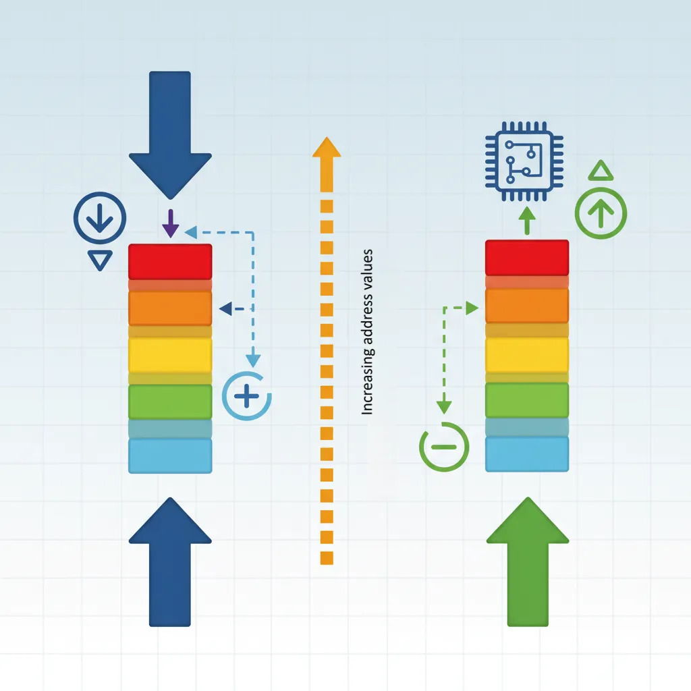

Stack Fundamentals

Stack Direction: The x86 stack grows downward (toward lower addresses). PUSH decrements RSP, POP increments RSP. The stack must be 16-byte aligned before CALL instructions.
x86 Assembly Mastery
Your 25-step learning path • Currently on Step 9
Development Environment, Tooling & Workflow
IDEs, debuggers, build tools, workflow setupAssembly Language Fundamentals & Toolchain Setup
Syntax basics, assemblers, linkers, object filesx86 CPU Architecture Overview
Instruction pipeline, execution units, microarchitectureRegisters – Complete Deep Dive
GPRs, segment, control, flags, MSRsInstruction Encoding & Binary Layout
Opcode bytes, ModR/M, SIB, prefixes, encoding schemesNASM Syntax, Directives & Macros
Sections, labels, EQU, %macro, conditional assemblyComplete Assembler Comparison
NASM vs MASM vs GAS vs FASM, syntax differencesMemory Addressing Modes
Direct, indirect, indexed, base+displacement, RIP-relative9
Stack Internals & Calling Conventions
Push/pop, stack frames, cdecl, System V ABI, fastcall10
Control Flow & Procedures
Jumps, loops, conditionals, CALL/RET, function design11
Integer, Bitwise & Arithmetic Operations
ADD, SUB, MUL, DIV, AND, OR, XOR, shifts, rotates12
Floating Point & SIMD Foundations
x87 FPU, IEEE 754, SSE scalar, precision control13
SIMD, Vectorization & Performance
SSE, AVX, AVX-512, data-parallel processing14
System Calls, Interrupts & Privilege Transitions
INT, SYSCALL, IDT, ring transitions, exception handling15
Debugging & Reverse Engineering
GDB, breakpoints, disassembly, binary analysis, IDA16
Linking, Relocation & Loader Behavior
ELF/PE formats, symbol resolution, dynamic linking, GOT/PLT17
x86-64 Long Mode & Advanced Features
64-bit extensions, RIP addressing, canonical addresses18
Assembly + C/C++ Interoperability
Inline assembly, calling C from ASM, ABI compliance19
Memory Protection & Security Concepts
DEP, ASLR, stack canaries, ROP, mitigations20
Bootloaders & Bare-Metal Programming
BIOS/UEFI, MBR, real mode, protected mode transition21
Kernel-Level Assembly
Context switching, interrupt handlers, TSS, GDT/LDT22
Complete Emulator & Simulator Guide
QEMU, Bochs, instruction-level simulation, debugging VMs23
Advanced Optimization & CPU Internals
Pipeline hazards, branch prediction, cache optimization, ILP24
Real-World Assembly Projects
Shellcode, drivers, cryptography, signal processing25
Assembly Mastery Capstone
Final project, comprehensive review, advanced techniquesPUSH & POP Instructions
Stack Operations
; PUSH: Decrement RSP, store value
push rax ; RSP -= 8; [RSP] = RAX
push qword 42 ; Push immediate
push qword [var] ; Push memory value
; POP: Load value, increment RSP
pop rbx ; RBX = [RSP]; RSP += 8
pop qword [var] ; Pop to memory
; Equivalent operations:
sub rsp, 8 ; Equivalent to...
mov [rsp], rax ; ...push rax
mov rbx, [rsp] ; Equivalent to...
add rsp, 8 ; ...pop rbxRSP Management & Alignment
The x86-64 ABI requires the stack to be 16-byte aligned before a CALL instruction. Since CALL pushes an 8-byte return address, RSP is misaligned inside the called function.
Before CALL: RSP = 0x7FFF0010 (16-byte aligned: last nibble is 0)
After CALL: RSP = 0x7FFF0008 (misaligned by 8 due to return address)
After PUSH: RSP = 0x7FFF0000 (aligned again)
Alignment Rule: Before calling any function (including library functions), ensure RSP is 16-byte aligned. Misalignment can cause
SEGFAULT on SSE instructions that require aligned memory!
; Proper stack alignment patterns:
; Pattern 1: Push an odd number of 8-byte values
my_function:
push rbp ; RSP now 16-byte aligned
push rbx ; (if needed, saves callee-saved)
push r12
sub rsp, 24 ; Allocate + ensure 16-byte alignment
; Pattern 2: Use AND to force alignment
mov rbp, rsp
and rsp, -16 ; Force 16-byte alignment (clear low 4 bits)
; Pattern 3: Adjust allocation size
sub rsp, 40 ; 32 for shadow space + 8 for alignment